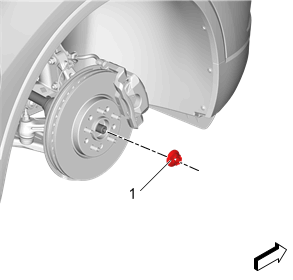
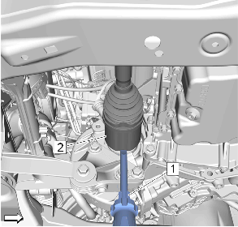
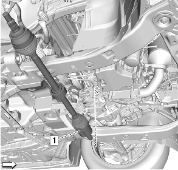
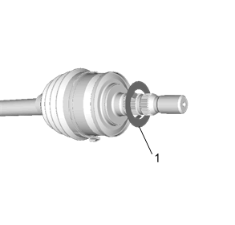
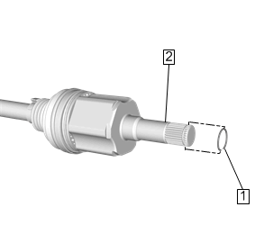

前轮驱动半轴的更换－右侧（不带中间轴）
拆卸程序
1.
拆下右前轮胎和车轮总成。
轮胎和车轮的拆卸和安装

警告：
为避免人身伤害和/或部件损坏，拆下车轮驱动轴或车轮驱动轴螺母后，切勿使车辆重量加载在前轮上或尝试运行车辆。否则可能导致轴承内座圈分离，导致制动和悬架部件损坏以及车辆失控。
2.
车轮驱动轴螺母（1）»拆下
3.
转向传动机构外转向横拉杆@转向节»分离—
转向传动机构内转向横拉杆的更换
4.
下控制臂@转向节»分离—
下控制臂的更换

告诫：
在对车轮驱动轴或其附近进行维修的任何时候，都应保护车轮驱动轴护套、密封件和卡箍免于接触尖锐物体。如果护套、密封件或卡箍损坏，则可能会导致润滑油从万向节漏出，造成车轮驱动轴噪声增大且出现故障。
5.
使用合适的工具（1）从变速器上移开驱动轴（2）。

6.
前轮驱动轮半轴 （1）»拆下

7.
垫圈（1）»拆下并报废

8.
卡环（1）@前轮驱动轮半轴 （2）»拆下并报废
安装程序
1.
卡环（1）@前轮驱动轮半轴 （2）»安装新的
2.
垫圈（1）»安装新的
注意:
确保前轮驱动轮轴中间轴完全装配在变速器上。
3.
前轮驱动轮半轴（1）»安装
4.
下控制臂@转向节»安装—
下控制臂的更换
5.
转向传动机构外转向横拉杆@转向节»安装—
转向传动机构内转向横拉杆的更换
告诫：
有关紧固件的告诫
6.
车轮驱动轴螺母（1）»安装并紧固
150 N•m(111 lb ft)
7.
安装右前轮胎和车轮总成。
轮胎和车轮的拆卸和安装